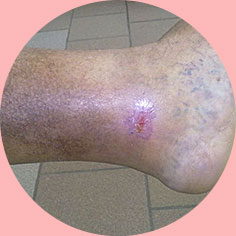

PORQUE É NECESSÁRIO NÃO IGNORAR AS VEIAS VARICOSAS?

Mesmo uma varizes de grau zero pode levar a uma insuficiência venosa crónica, que até agora tem sido não tratada pela medicina.

As varizes são, antes de mais, um risco elevado de trombose. Um coágulo de sangue pode romper-se a qualquer momento e enviar uma pessoa para o além num instante!

A varizes progressiva causa úlceras tróficas em todo o corpo, que só podem ser tratadas por enxerto de pele.